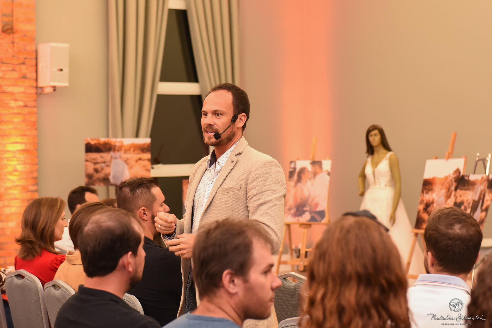
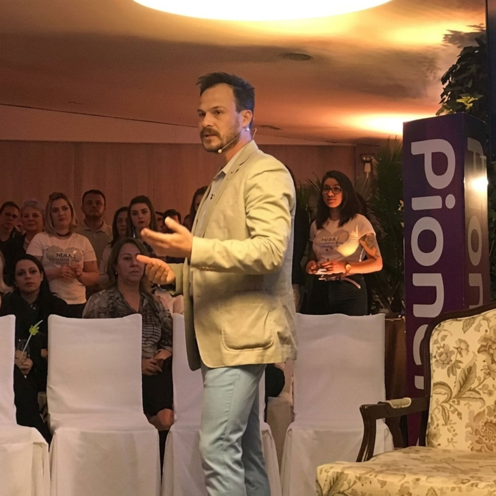
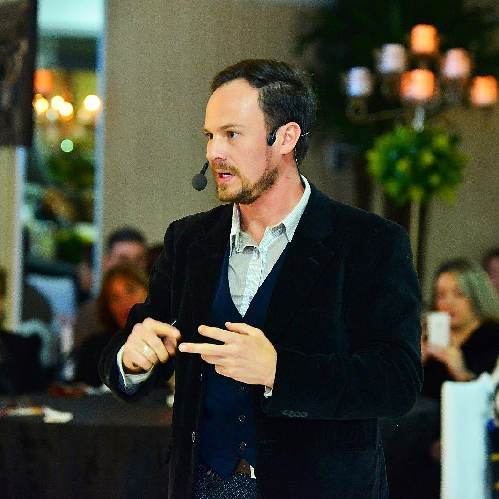
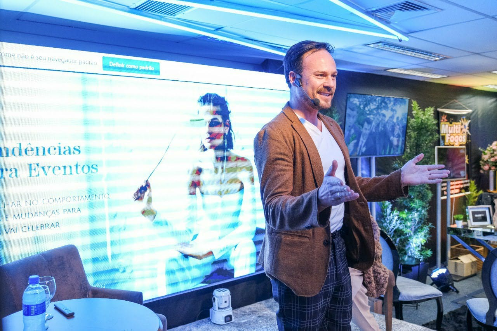
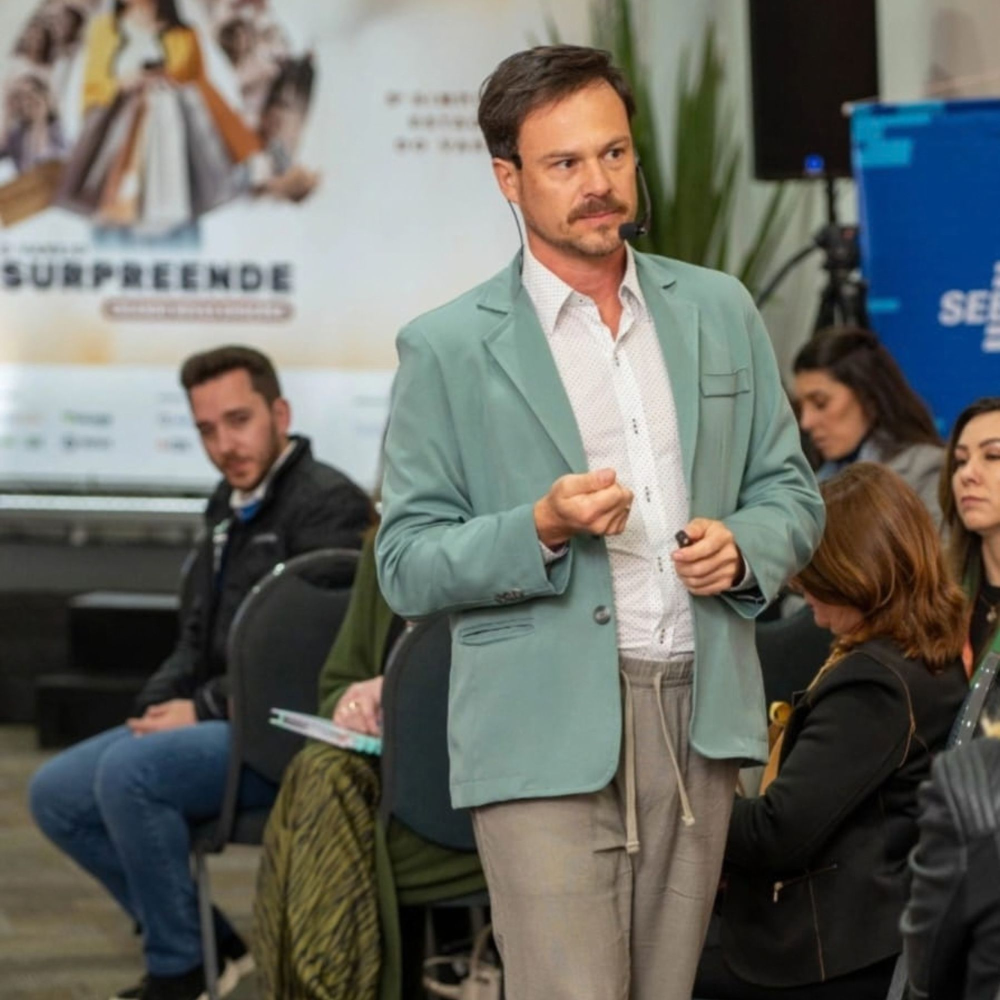
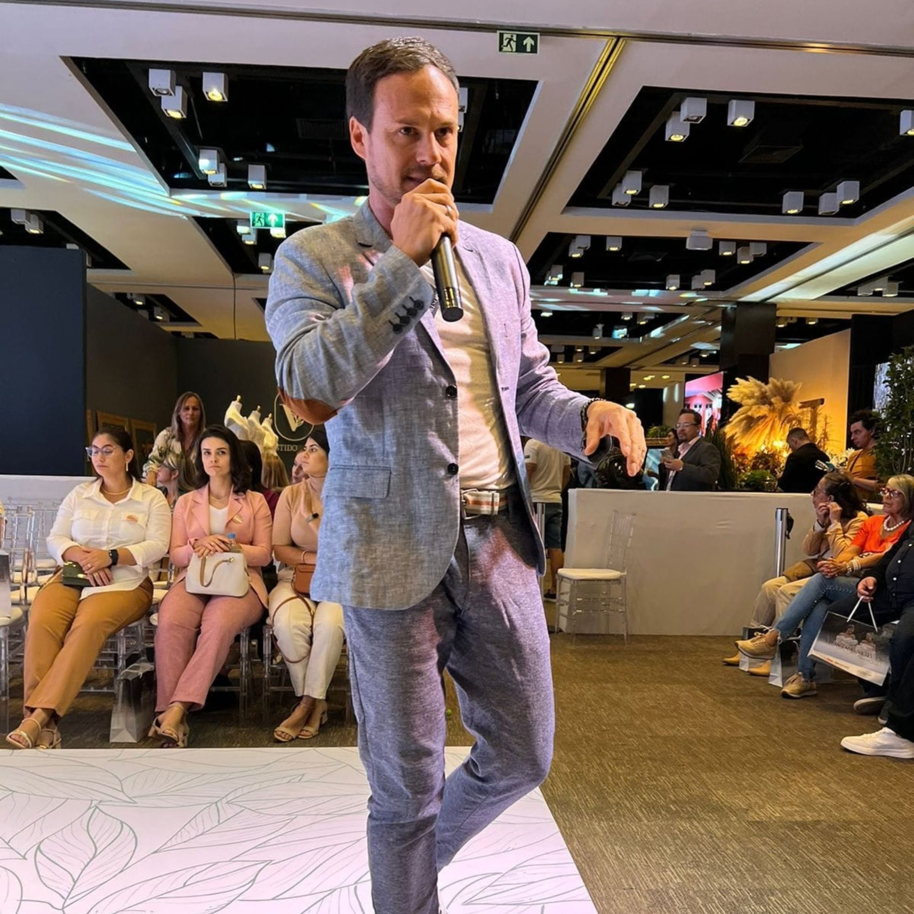
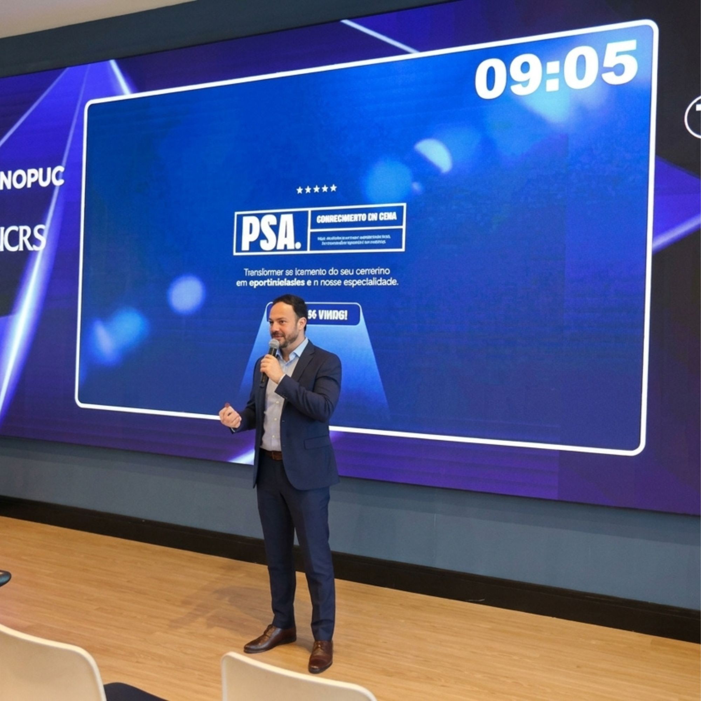

Minha trajetória sempre foi movida pela curiosidade, criatividade e o desejo de me conectar com pessoas.
Entre a arte e os eventos, aprendi observar, escutar e a perceber que, por trás de cada encontro, existe muito mais do que aquilo que os olhos conseguem ver.
Como cerimonialista, há mais de 23 anos, faço parte de momentos, vivencio experiências e descubro em cada situação, novas maneiras de compreender as conexões humanas.
Hoje, levo essa bagagem para o palco, compartilhando histórias, aprendizados e reflexões que aproximam pessoas e despertam novos olhares sobre a vida, as relações e os negócios.
Porque compartilhar o que vivemos também é uma forma de transformar!

Organização, planejamento e memória, como cada detalhe contribui para transformar um dia único em uma experiência que permanece.
Saiba mais
Um painel dinâmico sobre os bastidores da organização, planejamento e protocolo de grandes recepções, apresentando as novas tendências do mercado destacadas na edição impressa da Revista Noivas & Festas do Pioneiro, em seu lançamento oficial.
Saiba mais
Como a visão, audição, olfato, paladar e o tato se unem à organização e ao planejamento para transformar cada detalhe em uma experiência marcante, capaz de permanecer na memória.
Saiba mais
Um olhar sobre as tendências de ambientação, gastronomia e comportamento no setor de eventos no pós-pandemia, e sobre como as pessoas passaram a viver essas experiências.
Saiba mais
Os detalhes do dia a dia que fazem a diferença na experiência do cliente e ajudam a construir fidelidade em uma era cada vez mais digital.
Saiba mais
Uma reflexão sobre tendências e individualidade, será que o que está em alta faz sentido para todos os perfis de pessoas e todos os tipos de celebração?
Saiba mais
Networking, troca de conhecimentos e aperfeiçoamento em comunicação e oratória, ampliando recursos para proporcionar experiências significativas ao público.
Saiba maisAcredito que a experiência carrega um aprendizado, o encontro deixa marcas e toda história pode nos ensinar a enxergar o mundo de outra maneira.
Compartilhar ideias, provocar novas perspectivas!
Conte o que você busca e vamos juntos criar uma proposta única para uma experiência transformadora!